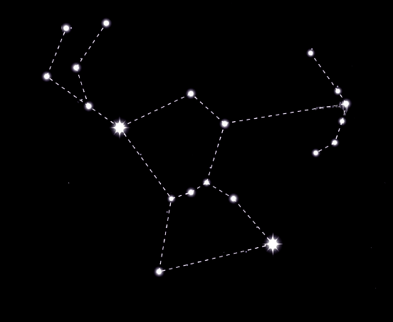

Orion sau Vănătorul este unul dintre cele mai evidente şi uşor de recunoscut constelaţii ale cerului. Una dintre cele mai vechi, localizată pe ecuatorul ceresc, este bine cunoscută pentru o nebuloasă gigantică. Personajul pe care îl reprezintă este un vânător nemilos, care poartă o sabie, şi se opune atacului unui taur.
Orion este poziţionată aproape exact pe ecuatorul ceresc, formând o extensie imaginară a liniei ecuatoriale. Principala componentă a constelaţiei este un brâu de 3 stele, uneori numite cei "3 regi". Aceste stele, numite Alnitak, Alnilam şi Mintaka, sunt, de asemenea, uneori menţionate că "Scara lui Iacov". Această "centură" este cel mai uşor vizibilă în emisfera nordică în cursul lunii ianuarie. Găsirea celor trei stele din centură este cel mai simplu mod de a localiza constelaţia pe cer. Subsuoara lui Orion şi piciorul stâng sunt marcate de două dintre cele mai strălucitoare stele pe cerul nopţii. Betelgeuse, axila, este o stea de culoare roşu aprins, în timp ce Rigel, piciorul, este a şasea cea mai strălucitoare stea de pe cer.
4h 45m la 6h 25m
+11 la +23°
Beta Orionis (Rigel)
Numele Orion vine din mitologia greacă unde vânătorului era un gigant primordial ce dorea să se însoare cu Merope, fiica regelui Oenopion din Chios. Cu toate că există diferite versiuni are poveştii, în esenţă, regele îl refuză pe Orion şi acesta se supără şi vrea să omoare toate animalele din lume, în semn de răzbunare. Gaia, zeita Pământului, trimite un scorpion să îl otrăvească pe Orion pentru a-l împiedică în încercarea sa. Artemis, zeita vânătorii l-a protejat pe Orion aşezându-l pe partea opusă a cerului faţă de scorpion. De aceea, cele două constelaţii sunt pe părţi opuse ale cerului şi nu pot fi văzute niciodată împreună.
Iarna
Taurul, Râul,Gemenii, Iepurele, Inorogul